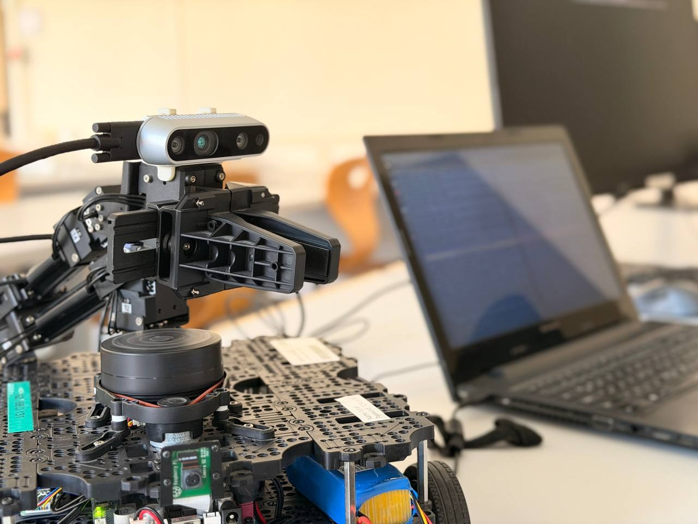
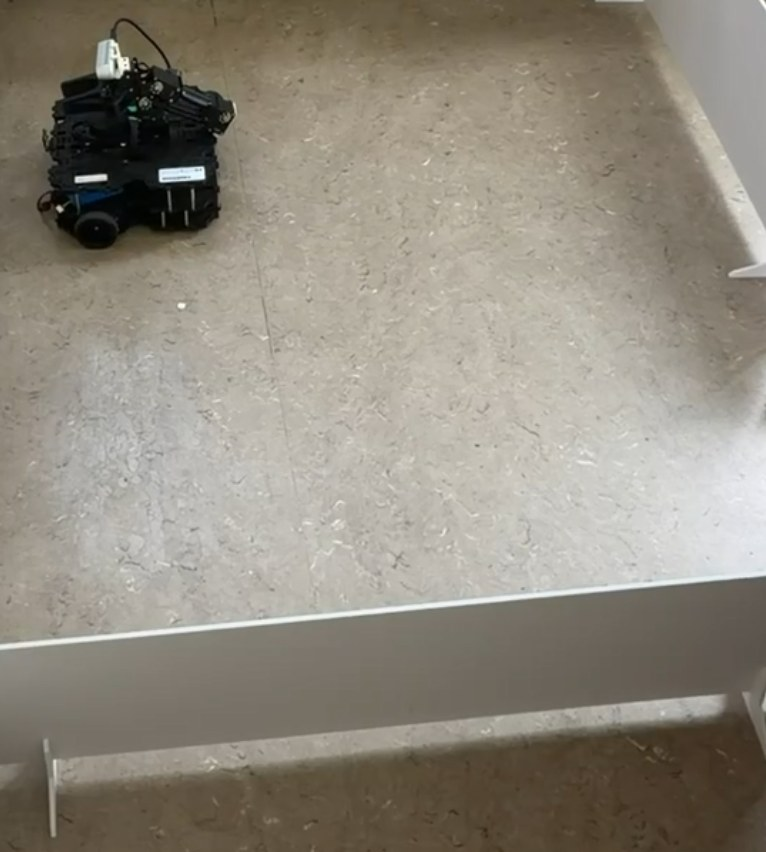
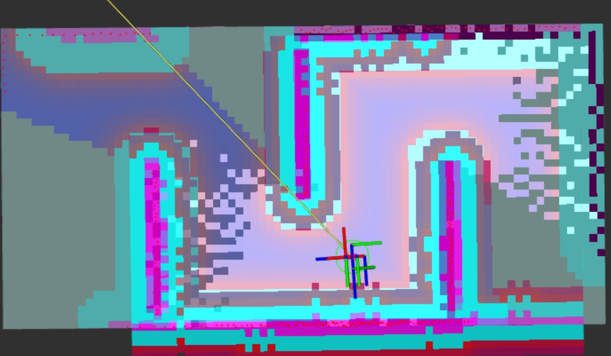
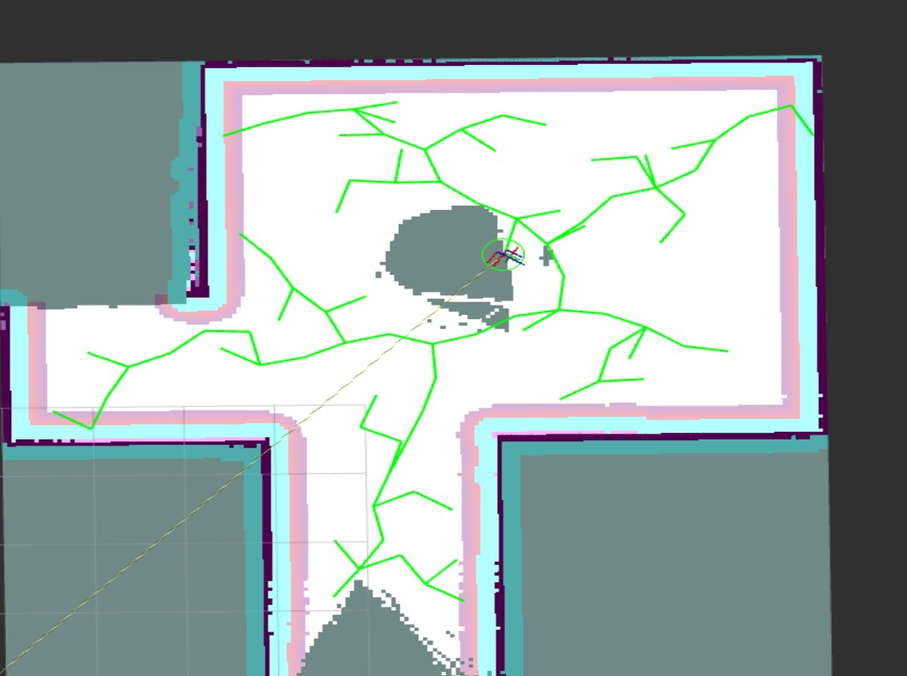
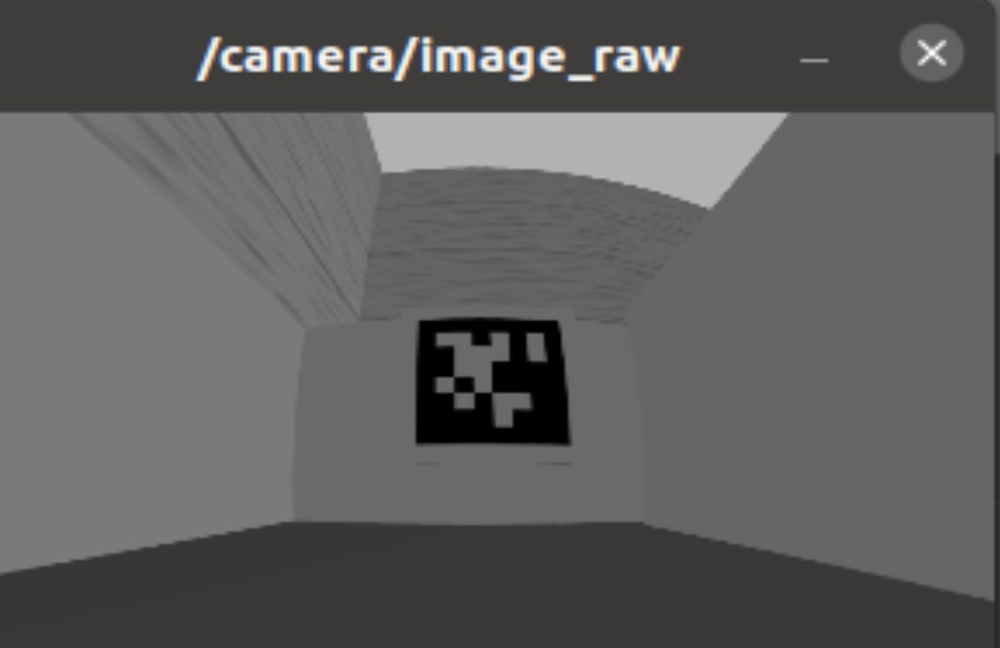

ROS 2 · NAV2 · SLAM · RRT
Autonomous Navigation & Maze Exploration with TurtleBot3
This project focused on developing and validating an autonomous exploration and navigation system for a TurtleBot3 Waffle Pi using ROS 2 Humble. The system combines SLAM Toolbox, frontier-based exploration, RRT-based path planning, and Navigation2 (Nav2) to enable the robot to explore unknown indoor environments and build occupancy-grid maps. The development was first implemented and tested in Gazebo and RViz2 before being transferred to the physical robot. The real platform was equipped with an LDS-02 LiDAR, Raspberry Pi 4, and Intel RealSense D435i RGB-D camera for mapping, navigation and visual perception. During the real-world deployment, hardware configuration, sensor integration, ROS 2 compatibility and synchronization challenges were investigated and addressed. The project demonstrates the complete transition from simulated autonomous navigation to a physical mobile robot and highlights the practical challenges involved in deploying robotics algorithms on real hardware.

Project Evidence
Selected images from the hardware setup, exploration pipeline and real-robot testing.




